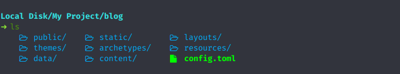
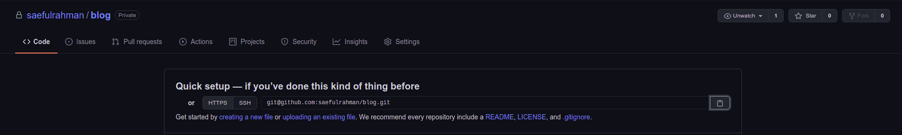

Cara Hosting atau Deploy Hugo di Github Pages

Github adalah salah satu layanan khusus developer yang dibuat karena terinpisrasi dari cara bekerja pada pogrammer. Singkatnya Github adalah sebuah manajemen project, sistem versioning code, sekaligus layanan jaringan sosial bagi para developer di seluruh dunia. Sehingga lewat layanan Github, akan memudahkan developer dalam mengembangkan sebuah karya baik private atau open-source.
Selain sebagai layanan manajemen project, Github juga menyediakan layanan hosting Static Page yang bisa Kamu manfaatkan untuk hosting blog Hugo milikmu. Artinya, Kamu bisa memiliki sebuah blog gratis tanpa perlu membeli sebuah hosting.
Walaupun Github hanya mengijinkan file statis untuk di-host di layanan mereka. Namun, Kamu tak perlu khawatir, karena Kamu akan menggunakan Hugo sebagai platform blognya.
Kamu bisa melakukan kustomisasi dan update blog Hugo milikmu layaknya layanan blog dinamis lainnya. Selanjutnya adalah tinggal Hugo yang melakukan tugasnya untuk membuat atau generate sebuah file statis yang Kamu bangun dengan Hugo. Pada dasarnya Hugo akan membuat file statis di dalam direktori public.
Nah, isi dalam direktori public tersebut yang akan Kita upload ke layanan Github Pages agar blog milikmu bisa dibuka dengan url https://username.github.io atau kustom domain sendiri.
Pada panduan dokumentasi Hugo di Host on Github , ada 2 cara untuk hosting Hugo di Github Pages, yaitu :
- Hosting ke User/Organization Pages
https://[username|organization].github.io - Hosting ke Project Pages
https://[username|organization].github.io/[project]
Sebenarnya kedua cara diatas sama saja, cuma beda pada letak penyimpanan saja. Yang satu disimpan pada root domain, sedangkan satu lagi disimpan pada sub page dari domain. Kita akan menggunakan cara pertama, yaitu hosting menggunakan username Github Kita dan disimpan pada root domain. Sehingga nantinya URL blog Kita akan bisa diakses dengan URL https://username.github.io.
Langsung saja Kita mulai, untuk cara hosting atau deploy Hugo ke Github Pages.
Daftar Isi
Mempersiapkan Repositori Github
Langkah pertama, tentu Kamu siapakan dua buah repositori Github, yaitu :
blog(opsional)username.github.ioatauorganization.github.io.
Kedua repositori diatas bisa Kamu buat langsung di halaman Github-nya langsung, dimana untuk poin pertama adalah opsional. Kamu bisa membuatnya atau tidak pun tak jadi masalah. Namun, pada kasus kali ini Saya akan membuat kedua repositori tersebut untuk memudahkan dalam manajemen proyek blog Hugo yang Kamu kelola.
Membuat Repositori Blog
Pertama silakan Kamu buat repositori baru dengan nama blog pada halaman Github, seperti ini.
Repositori blog berfungsi untuk menyimpan proyek blog Hugo milikmu di Github, sehingga akan memudahkankanmu dalam mengelola blog ke depannya. Misalnya seperti mengubah desain dan tema dari blog Hugo milikmu.
Membuat Repositori Github Pages
Langkah kedua, Kamu buat repositori baru dengan nama username.github.io pada halaman Github. Ganti username dengan username Github milikmu. Disini saya membuat repositori baru dengan nama saefulrahman.github.io. Namun, karena Saya sudah membuatnya jadi muncul keterangan nama sudah digunakan. Untuk jenis proyeknya buat public, karena repositori ini yang Kamu hosting nanti. Untuk pengaturan lainnya, samakan saja seperti dibawah ini.
Repositori username.github.io berfungsi untuk menyimpan proyek file statis blog Hugo milikmu. Nantinya, semua isi dari repositori ini yang akan bisa diakses lewat URL https://username.github.io.
Sampai sini, Kamu berhasil membuat dua buah repositori blog dan username.github.io. Kedua repositori tersebut dibuat dalam keadaan kosong. Kamu tak perlu khawatir, karena kedua repositori yang sudah dibuat tadi akan di isi nantinya lewat git.
Jika, kedua repositori diatas sudah dibuat. Langkah selanjutnya adalah melakukan pengaturan repositori di lokal agar terhubung dengan repositori di Github.
Mempersiapkan Repositori Lokal
Setelah membuat dua repositori kosong di Github, selanjutnya Kita akan membuat repositori baru di lokal dan menguhubungkan ke repositori di Github dengan remote. Pertama, silakan buka terminal dan masuk ke proyek blog Hugo milikmu.
Silakan, Kamu buka terminal dan masuk ke root folder proyek Hugo milikmu.
cd blogIni adalah contoh direktori dari proyek blog Hugo milik Saya.

Jika sudah berada pada root folder pryoek Hugo, lakukan inisiasi git.
git initJika, sudah melakukan inisiasi git, langkah selanjutnya Kamu hapus terlebih dahulu folder dengan nama public. Karena nantinya Kamu bisa membuat lagi dengan perintah hugo.
rm -rf publicSelanjutnya adalah menghubungkan repositori lokal Kamu dengan yang ada di Github dengan menggunakan git remote, sepert ini.
git remote add origin https://github.com/[username]/[nama-repositori].gitAtau kalau Kamu ingin cepat, buka URL proyek repositori Kamu di Github dan copy HTTPS atau SSH yang ingin Kamu gunakan.

Jika saat proses remote disuruh memasukkan password, maka Kamu isi saja dengan password Github milikmu untuk proses validasi karena repositori private.
Sekarang repositori lokal milikmu sudah terhubung dengan yang ada di Github, jadi sekarang semua perubahan yang dilakukan akan terdeteksi oleh git manajemen proyek secara otomatis.
Upload Ke Github
Karena repositori lokal sudah terhubung dengan yang ada di Github, Kamu sekarang bisa melakukan proses upload atau push ke Github lewat git. Silakan lakukan perintah berikut ini untuk melakukan upload ke Github.
git add .
git commit -m "Pesan commit"
git push -u origin masterJika Kamu malas melakukan semua manajemen proyek menggunakan git lewat terminal. Kamu bisa menggunakan aplikasi Github Desktop berbasis Graphical User Interface untuk pengguna Linux. Karena, Github Desktop tersedia versi Linux nya juga, Kamu bisa download pada halaman ini.
Membuat Submodule
Sekarang Kamu sudah meng-upload proyek Hugo milikmu ke Github. Sekarang Kita akan mengisi repositori yang username.github.io untuk diisi dengan file statis hasil generate Hugo. Sehingga nantinya Kamu bisa mengaksesnya lewat URL https://username.github.io.
Pastikan dulu Kamu sekarang berada di root folder dari proyek Hugo milikmu, pada kasus Saya root foldernya adalah blog. Disini Saya akan menggunakan HTTPS untuk prosesnya. Kemudian lakukan perintah berikut untuk membuat submodule.
git submodule add -b master https://github.com/[username]/[username].github.io.git publicSetiap proses git yang menggunakan HTTPS pasti selalu akan diminta memasukkan password untuk proses validasi. Nah, jika Kamu malas harus memasukkan password. Maka solusinya adalah gunakan metode dengan SSH agar proses autentikasi dilakukan tanpa password.
Perintah tersebut akan melakukan clone repository username.github.io ke dalam direktori public.
Sekarang Kamu sudah bisa mempublikasikan blog milikmu di Github Pages. Untuk melakukannya, silakan ketik perintah berikut.
# Perintah untuk generate static web
hugo
# Push ke repositori Github
cd public
git add .
git commit -m "Update blog"
git push -u origin masterSekarang proyek Hugo milikmu sudah dapat diakases lewat URL username.github.io. Namun, jika masih kosong, artinya masih dalam proses oleh Github. Kamu tinggal tunggu saja hingga blog Hugo milikmu bisa diakses, biasanya cuma sebentar.
Perintah diatas harus Kamu lakukan terus-menerus setiap ada perubahan pada tema atau konten dari proyek Hugo milikmu. Maka dari itu, Kamu bisa membuat sebuah script khusus untuk mengubahnya menjadi perintah yang sederhana.
Membuat Script Hosting/Deploy Otomatis
Disini Saya akan menambahkan fitur deploy otomatis setiap akan update tema atau konten proyek Hugo. Script ini Saya ambil contoh dari Petani Kode1, karena blog dan tulisan ini juga terinspirasi dari Petani Kode.
Kita akan mengubah perintah berikut, menjadi perintah sederhana.
# Perintah untuk generate static web
hugo
# Push ke repositori Github
cd public
git add .
git commit -m "Update blog"
git push -u origin masterKita ubah dan bungkus dalam satu script bash sederhana. Pertama buat file baru dengan nama deploy.sh, lalu copy perintah dibawah ini dan simpan dalam root folder proyek Hugo milikmu.
#!/bin/bash
echo -e "\033[0;32mDeploying updates to GitHub...\033[0m"
# Genterate file statis
hugo # if using a theme, replace by `hugo -t <yourtheme>`
# pindah ke direktoru publik
cd public
# tambahkan perubahan ke Git
git add -A
# Buat sebuah commit baru
msg="rebuilding site `date`"
if [ $# -eq 1 ]
then msg="$1"
fi
git commit -m "$msg"
# Push atau puload ke Github
git push origin master
# Balik ke direktori sebelumnya
cd ..
git push -u origin masterSelanjutnya Kamu berikan izin kepada filenya, agar file deploy.sh diakses dan dieksekusi.
chmod +x deploy.shNah, sekarang Kamu sudah mempunyai fitur deploy otomatis untuk update tema dan konten blogmu. Untuk menjalankanya, Kamu tinggal ketikkan perintah berikut.
./deploy.shAtau Kamu bisa menambahkan pesan commit setiap melakukan update tema atau konten blogmu.
./deploy.sh "Pesan update blog"Sekarang setiap akan melakukan update tema atau konten, Kamu tinggal melakukan perintah sederhana diatas. Cara ini juga Saya lakukan juga pada blog ini.
Selamat mencoba dan semoga berhasil!

Saya seorang professional Web Developer yang telah berpengalaman selama kurang lebih 6 tahun. Saya berhasil membuat website yang responsif, cepat, dan mudah digunakan. Bidang keahlian utama Saya adalah Front-End Developer, seperti CSS, HTML, dan JavaScript untuk membangun website skala kecil hingga menengah.
Related Post

Cara Menggunakan SSH di Github
Dengan menggunakan protokol SSH, Kamu bisa terhubung dan remote ke server secara jarak jauh. Lewat kunci SSH Kamu bisa terhubung dan akses ke server t...

Membuat Blog Pribadi Menggunakan Hugo
Memilki sebuah blog pribadi merupakan salah satu langkah untuk memperkenalkan diri kepada orang lain. Hadirnya blog pribadi akan membuatmu lebih mudah...